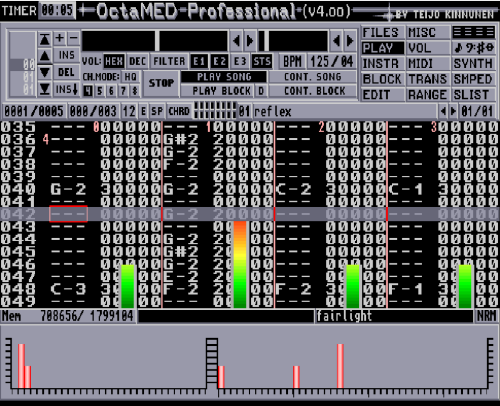
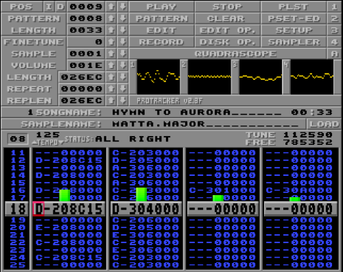

The Solana Vanishing Act
The Solana Vanishing Act
The first thing many who get more seriously into the Amiga retro computing hobby do is to replace the original operating system with the latest one, or at least with the latest official (3.1) version. But there is something special about keeping it original and use it like it was back in the day. Trying to get the most out of it. It's not as fancy and convenient as newer versions, that's true. But I think Workbench 1.3 is often dismissed as something unusable by modern (Amiga) standards, despite it being far more capable than you'd think.
I spent quite a bit of time with making my Workbench 1.3 more nice and I would like to share my favourite tools, utilities and programs here, that will make your Amiga 500 more productive.
Many will run from floppy and can be added to your Workbench 1.3 disk, but for the best result or building a whole desktop system with a combination of these, a hard drive is highly recommended. For reference, my Amiga 500 is equipped with Kickstart 1.3 and an A590 hard drive with 2MB Fast RAM.
All software on this list is either public domain, shareware, free or was released under some form of free for non-commercial use licence.
(Alphabetical order)A small utility that lets you create a dock (vertical or horizontal) and use brushes, text or icons to add launchers to it. It's similar to later docks, but it runs on WB1.3 and is very small and fast. It has a bunch of brushes included both high-res interlaced and non-interlaced and you can pretty easily make new brushes based on them with Deluxe Paint. I consider AmiDock one of the cornerstones to make the 1.3 desktop more usable and nice.
Download: AmiDock.lha (Aminet)

It's a hypertext utility made by Commodore. The archive on the Fred Fisk Disk contains developer examples and tools for AmigaGuide that works under Kickstart 1.3, plus a new free distribution license for AmigaGuide, amigaguide.library, WDisplay, and their icons.
Download: Fred Fish Disk #870
AmigaNOS (or AmigaTCP or KA9Q) is probably the only TCP/IP stack that works on Kickstart 1.3, besides Commodore's AS225 stack. It's a port of the TCP/IP stack originally written by Phil Karn. I made a somewhat comprehensive guide on how to set it up.
Download: AmigaNOS-Complete.lha
Test various functions of your Amiga that it works as it should. Comes with a bootable ADF or just copy the executable.
Download: Github release page
The AmigaDOS Resource Project, with the aim to bring the AmigaDOS enhancements and functionality that was made available in 2.0+ back to 1.3. It adds an arp.library and a set of replacement commands for Commodore's originals, rewritten in C (instead of BCPL), while retaining compatibility.
Download: ARP_13.lha (Aminet)
A simple boot selector you can control with the Function keys on boot. One of the few that works on Kickstart 1.3 and can be used to make a dual boot system with newer OS versions. I use it to run mkick and load Kickstart 3.1 if I hold down F1 during boot. Very useful!
Download: BeSel.lha (Aminet)
A popular public domain disk copier. Copies non-dos disks and comes with many features of the then commercial X-Copy for free. Can also be used with a Gotek drive to copy back ADF files to real floppies and vice versa.
Download: DCopy31.lha
Probably the most iconic two panel file manager on Amiga. Directory Opus 4 is versatile and configurable and comes with an intuitive drag and drop functionality. In 1999 the source code was released under GNU Public License. The last commercial release was 4.12, which works well on Workbench 1.3.
Download: CU_DirectoryOpus.zip
DiskMaster 2.2b is the last version I found that works on Kickstart 1.3. This two panel file manager is a probably the fastest and simpliest to launch if you quickly want to manipulate some files on your system as it requires very little dependencies and resources and uses Workbench windows. It's one of the first utils I install on my Amigas. It's still under development for newer Amiga systems, but unfortunately the old V34 archive is hard to find.
Download: DM2V34.zip
A tiny mouse accelerator with extra features such as a mouse blanker, auto window activator, popcli, pop window to front, push window to back, etc. Similar to QMouse.
Download: Fred Fish Disk #421
The last version of the original file manager by Toni Wilen, the author of WinUAE, before the complete rewrite. Features include: ILBM/ascii/hex viewers, hex editor, disk editor, protracker module and audio sample players, user configurable command buttons, and more.
Download: FileMaster2.2.lha (Aminet)
Ever had a checksum or other type of error on a floppy disk? FixDisk might be able to help. Works with SFS and FFS volumes and makes it possible to recover damaged (unreadable) tracks and files from a defective disk.
Download: FixDisk_18.lha (Aminet)
The most versatile music module player on the Amiga, that supports a myriad of formats, plugins, visualisations and works perfectly on the old blue. Very resource efficient too. My goto option to listen to music while doing some productive stuff on my Amiga.
Download: hippoplayer.lha (Aminet)
AmigaLove made a wonderful icon package for 1.3 that contains disk (hdd, partition), drawer, tools, projects and trashcan icons. If you'd like to keep the 1.3 look'n'feel but make it a bit nicer, it's definitely worth checking out!
Download: AmigaLove Icon Set 1.3a
An icon editor that allows you to draw and edit images up to 150 by 90, in up to 16 colors. Allows freehand drawing, empty or filled rectangles, ellipses, triangles, lines curves, and polygons, copy, flip about x or y axis, stretching and condensing, flood fill and complement, text with selection and loading of font style, undo, magnified and normal sized images, and two active drawing screens at once. Perfect for making new icons or touching up existing ones.
Download: Fred Fish Disk #412
The Amiga Installer utility from Commodore. V1.24 works on Workbench 1.3 and comes with full documentation and examples.
Download: Fred Fish Disk #870
MagicWB for 1.3 turns your Workbench 1.3 as close in look and feel to 2.0 as possible. It adds more bitplanes for more colors and changes the palette to make newer icons look nice. On the screenshot below it's running together with Zoom-Deamon, NewLook, PBar and AmiDock.
Download: MagicWB1.3.lha (Aminet)
A small tool to display the current memory usage as a bar, similar to the disk usage bar in windows, on the left side of the Workbench screen.
Download: Fred Fisk Disk #222
Load a new Kickstart ROM into Fast memory and use that instead of the hardware ROM chip in your machine. One of the most compatible software kicker utilities and the only one I was actually able to make work. I use it together with BeSel to make a dual boot system between Kickstart 1.3 and 3.1. Here is a guide about how to set it up.
Download: MKick19.lha (Aminet)
Need some more space on your Workbench screen? Add some more rows and make it larger. Runs from CLI and basically has the same effect as overscan on newer systems.
Download: Fred Fish Disk #54
This utility written by Darin Johnson lets you create custom Workbench menus that you can open by holding the right mouse button. It's super useful as you can even create sub menus, launch WB and CLI programs just like from AmiDock. I use it for smaller utilities like formatting disks, ADF/DMS tools and activating other enhancement utilities like SimGen.
Download: Fred Fish Disk #225
A utility that changes the look of the window and screen gadgets across all screens.
Download: Fred Fish Disk #396
Stop that annoying empty floppy drive clicking sound. Most NoClick hacks require Kickstart 2.0, this should work on Kickstart 1.3
Download: Fred Fish Disk #241
The Amiga standard unarchivers. The first thing to grab, as they're required for extracting everything else.
Download: LhA_e138.run (Aminet), Lzx121r1.lha (Aminet)
A professional music tracker with 8 channel and MIDI support. A must have if you're serious about music making on the Amiga. Version 4.0 was released as free software and works perfectly even on old systems.
Download: OctaMEDv4.lha (Aminet)

Change the pattern in the title of the windows. Tired of the classic 1.3 stripes? Try some fancy new design! Comes with a set of patters and an utility to make your own.
Download: Fred Fish Disk #396
Small utilities to display the clock, available chip and fast memory and a calender where you can scroll through the years and months with the arrow keys.
Download: Fred Fish Disk #396
A text file reader with nice features. Smooth scrolling, jump between pages. Version 1.8 even features a more WB2.0 style look and supports PowerPacker packed files (comes with the library)
Download: Fred Fish Disk #542
Preferable Preferences, which aim to replace the original Prefs program and provide an alternative UI for setting system preferences more efficiently.
Download: Fred Fish Disk #242
The legendary 4 channel music tracker. Version 2.3F contains many bugfixes, fully supports 128kB samples and comes with a bootable ADF or the executable that can be launched from Workbench. For anyone interested in .MODs or music-making on the Amiga.
Download: ProTracker 2.3F

A very small and capable mouse accelerator utility, that also comes with a ton of other features like floppy a titlebar clock, screen and mouse pointer blanker, hotkeys, window click to front and more.
Download: Fred Fish Disk #262
This awesome program allows you to set a 2 or 4 color picture as a backdrop in Workbench 1.3. It looks like a simulated genlock (transparent windows), so that's where its name coming from: Simulated Genlock. It adds 1 or 2 bpp to the Workbench screen and loads the picture onto those bitplanes. The background image should be in an IFF format and 640x200 pixels in size. You can convert images to this format on modern computers with a tool like rgb2amiga.
Download: Fred Fish Disk #243
Have you been missing the clipboard functionality from your Workbench 1.3? Look no further. Snap is a clipboard tool for clipping text or graphics using the clipboard device. It handles different fonts, keymaps, etc. A must have if you work with text files.
Download: Fred Fish Disk #793
Monitor what's happening when you launch an application. What resources, devices, fonts, libraries it's looking for and troubleshoot why it's not working or launching. Missing font or library? You can figure it out quickly with this tool. Version 1.5 and 1.7 works on Workbench 1.3 just fine.
Download: Fred Fish Disk #725
The most popular system information and benchmark tool for Amiga. SysInfo has everything in one place and in a nice package. Unfortunately the latest version from Aminet doesn't work on Kickstart 1.3, but version 4.0 runs perfectly.
Download: Sysinfo_4.0.lha
A nice graphical application that can create Image files (also known as ADF or HDF) from any floppy disk or harddisk partition, or write ADF files back to real floppies. It supports GZIP and DMS, runs from CLI and WB and works on everything since Kickstart 1.2. Amazing piece of software and a must have if you're handling ADFs.
Download: tsgui.lha (Aminet)
Extract Zip files. Version 5.40 runs fine under Workbench 1.3.
Download: UnZip.lha (Aminet)
A small utility to add or remove a bitplane to Workbench to change the depth of the screen. You can add up to 4 bitplanes (16 colors). Can be run both from WB and CLI.
Download: Fred Fish Disk #543
Similar to AmiDock. It's a newer software intended for newer Workbench versions, but there is a 1.3 compatible release too, which is very much appreciated. It runs slightly slower than AmiDock, but more intuitive to use. It supports icons, pop-up menus and separators and the icons can be replaced with brushes (IFF/ILBM images). Cool that we have two docks to choose from.
Download: Official page
This software is a command shell replacement written by William S. Hawes, the author of AREXX. It's similar to KingCON and replaces the built in shell with a much more enhanced one. Your shell windows can have a close button, a custom prompt, file name completion (by default with pressing the ESC key), scrollbar and many more. In combination with ARP 1.3 (above) which replaces some of the AmigaDOS commands with more enhanched ones, this is the ultimate shell solution for Workbench 1.3 and is an absolute must have in my optinion.
Download: WShell20.lha
Version 3.4 if the legendary copy program with tons of features for formatting and copying disks between various drives. It was commercial software, but released for free in 2010 for non-commercial use. The Aminet upload contains the disk image from where you can copy it where you want.
Download: xcopy34_master_19910217.zip (Aminet)
Adds a third gadget to all windows to zoom in and out between two sizes. Minimize or maximize your windows quickly!
Download: Fred Fish Disk #498
Virus checker that recognizes over 220 boot viruses and over 115 file viruses. The filechecker can also decrunch files for testing. The memory checker removes all known viruses from memory without 'Guru Meditation' and checks memory for viruses regularly. Version 3.0 works well on Workbench 1.2/1.3 and the archive comes with reqtools.library.13. Make sure that's what gets copied to your LIBS: assign.
Download: Fred Fish Disk #902